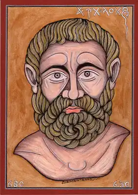

Архілох
(середина 7 століття до н. е.)
Архілох, давньогрецький лірик. Перший поет стародавньої Греції, який розповів віршами про себе та свої почуття. Народився на о. Паросі; син аристократа Телесікла і рабині. Час життя Архілоха точно невідомий, але з його іменем зв'язана перша точна дата в грецькій літературі. З літературної спадщини Архілоха до нас дійшло понад двісті уривків, серед яких немає жодного вірша, який зберігся би повністю. Архілох жив в епоху запеклих соціально-політичних конфліктів і яскраво відобразив у своїх віршах, від яких залишилися лише уривки, життєві поневіряння відщепенця від свого класу. Архілох писав епіграми, елегії, гімни. Але особливо славилися його уїдливі ямби. У віршах Архілоха ми вперше зустрічаємо шестистопний ямб, що згодом став пануючим у грецькій і римській драмі. Архілох створив епод — строфу, що складається з ямбічного і дактилічного вірша (архілохова строфа), добре відому нам по наслідуванню Горація. Шанувався греками як найвидатніший ліричний поет. Його ставили в один ряд з Гомером і Гесіодом. По смерті був визнаний гідним божествених почестей; на Паросі навіть відкрили його святилище. Зберіглись уламки напису при вході, що містять текст легенди про божественне посвячення Архілоха. Поезія Архілоха надала поштовх розвитку грецької лірики, а його нововведення були підхоплені численними поетами і письменниками, включно з грецькими комедіографами V ст. до н. е.